Before you start
Print plates
| Plate | Parts | Material | Notes |
|---|---|---|---|
| 1 | Front shell, rear shell, back plate, mute button | Matte PLA, or the wood variant (print/wood/) | 5 mm brim on the shells, no supports. Front shell face-up (seam on the bed), rear shell on its back rim. |
| 2 | Carrier, spider bracket | The same matte PLA | A little stiffer than PETG and more accurate for the key notches and insert holes. Spider at 100% infill. |
| 3 | Ring base, ring shell, mute button | Natural or clear PETG | The ring cap must be translucent. Use this mute button rather than the PLA one: its snap barb is tougher in PETG. |
| 4 | 2 grip pads, 4 speaker washers | TPU | The grip pads stop the clock turning when you turn the knob. |
Electronics
- Elecrow CrowPanel 2.1" rotary display
- Seeed reSpeaker XVF3800 with XIAO ESP32-S3
- 4428 3 W 8 Ω speaker
- 5 V 3 A USB-C charger
Tools
- Soldering iron with an M2 heat-set tip
- Hex keys 1.5 and 2.5 mm
- Multimeter
- Wire strippers, flush cutters, heat gun
- Craft knife
- 5 mm and 2 mm hole punch
Hardware
| Qty | Part | Where it goes |
|---|---|---|
| 3 | M3 × 12 socket head | Spider to the CrowPanel hub (replaces its 3 rear screws) |
| 3 | M2 × 20 socket head | Carrier, through the reSpeaker and the ring base's spacers, into the spider |
| 4 | M2 × 10 socket head | Speaker (2), USB-C breakout (2) |
| 7 | M2 heat-set insert (3 × 3.2 mm) | Spider 3, speaker bosses 2, USB-C wall 2 |
| 1 | USB-C breakout with 5.1 kΩ CC resistors | Power inlet on the back plate |
| — | Aluminium foil tape, about 50 mm wide, non-conductive adhesive | Lines the light channel |
| — | 1/16" adhesive closed-cell foam | 4 mic gaskets, 1 speaker ring |
| about 160 g | Steel BBs or shot (4.5 mm airgun BBs) + slow-cure epoxy, or about 300 g tungsten putty | Ballast pocket in the rear shell |
| — | CA (superglue) | Grip pads |
| — | 22/24 AWG silicone wire, 2-pin JST-SM or JST-XH pair, MX1.25 4-pin pigtail, heat shrink, zip tie | Power harness (docs/wiring/WIRING.md) |
Heat-set inserts
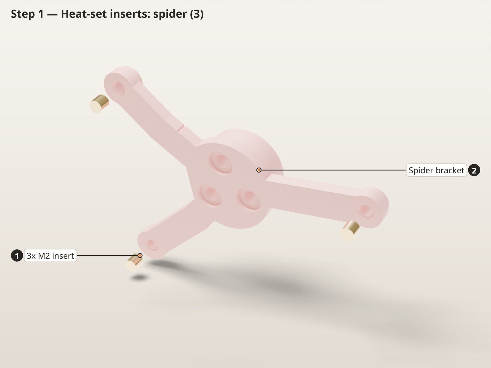
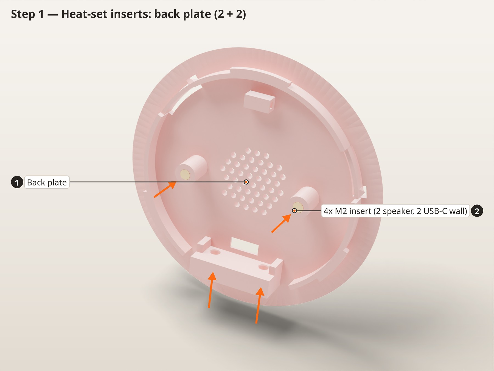
In this picture
- 13x M2 insert
- 2Spider bracket
In this picture
- 1Back plate
- 24x M2 insert (2 speaker, 2 USB-C wall)
- The M2 insert holes are Ø2.9, the size already confirmed on this printer. All 7 inserts go into PLA, so set the iron to about 190–200 °C.
- Spider (first picture): 3 inserts in the underside at the end of each arm.
- Back plate, speaker bosses (second picture): 2 inserts in the round bosses either side of the grille. The holes run deep on purpose: there is room below the screw tip for the plastic the insert pushes down.
- Back plate, USB-C wall: 2 inserts pressed in horizontally from the wall's outer face (the side toward the plate's rim; there is a lead-in chamfer there), flush with that face. Support the wall from the board side while you press.
Check before moving onRun an M2 screw into each insert by hand. It should start straight and stop on the thread, not on plastic.
Power harness
Parts
- USB-C breakout
- 22 and 24 AWG wire
- 2-pin JST-SM or JST-XH pair
- MX1.25 4-pin pigtail
- Heat shrink
- Follow
docs/wiring/WIRING.md. - Leave about 30 mm of slack in the USB-C lead and the speaker lead: the back plate turns 32° when it locks.
Check before moving onWith a multimeter, confirm 5 V and GND are not shorted. Power both boards on the bench and confirm they boot before anything goes into the case.
Spider bracket onto the CrowPanel
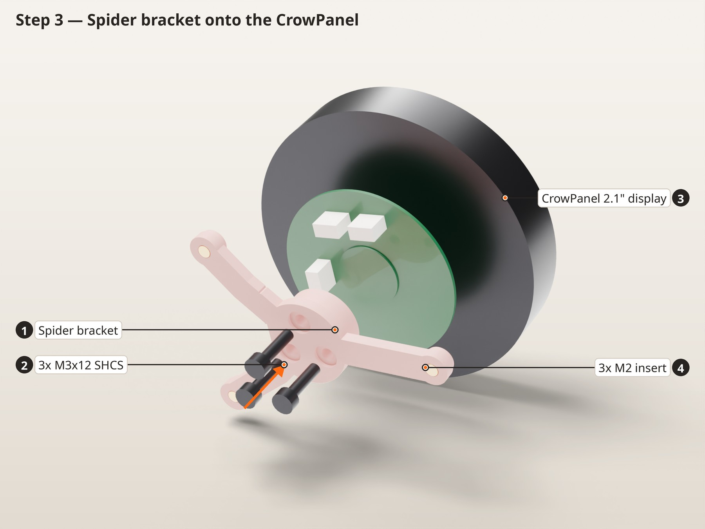
In this picture
- 1Spider bracket
- 23x M3x12 SHCS
- 3CrowPanel 2.1" display
- 43x M2 insert
- Remove the three M3 screws from the hub on the back of the CrowPanel.
- Fit the spider so its arms run between the three 4-pin connectors. Only one position leaves all the connectors clear.
- Fit 3 × M3 × 12 and tighten them evenly. The holes are a close fit (Ø3.1), so the screws may need a gentle turn to start.
Check before moving onThe knob still turns and clicks, and nothing touches the connectors.
Light ring, part 1 (ring base)
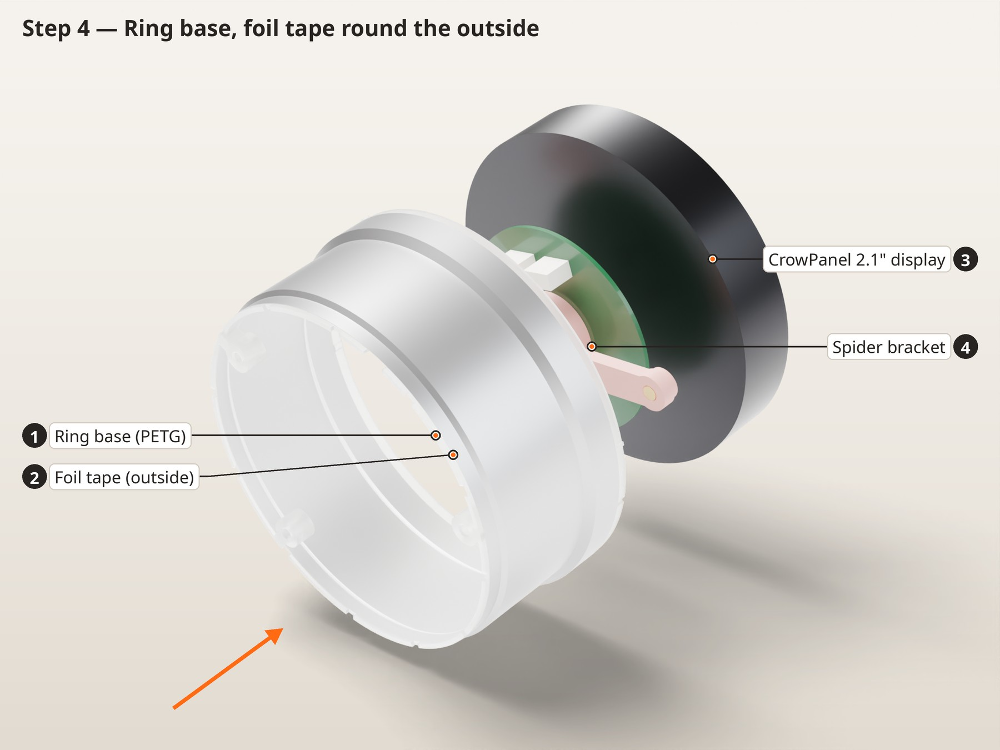
In this picture
- 1Ring base (PETG)
- 2Foil tape (outside)
- 3CrowPanel 2.1" display
- 4Spider bracket
- Wrap aluminium foil tape round the outside of the ring base's tall wall, from 1 mm above the bottom edge up to 2 mm below the top edge. Keep it smooth (it is the channel's mirror) and keep it off the top 2 mm, where the crush ribs and key slots are. Then cut the tape away over the cable notch (5 × 2 mm) with a craft knife. Use tape with non-conductive adhesive: the LED capacitors sit just below the bottom edge.
- Plug the CrowPanel lead into its connector and lay it so it can leave through the notch at the ring base's foot.
- Slide the ring base over the spider from behind, with the cable notch at 11 o'clock seen from the front (one hour left of the mute button), until its three spacers sit under the spider's insert pads. Feed the lead out through the notch.
Check before moving onThe ring base sits square on the spider pads and the foil is smooth, with no tape over the notch.
reSpeaker and carrier
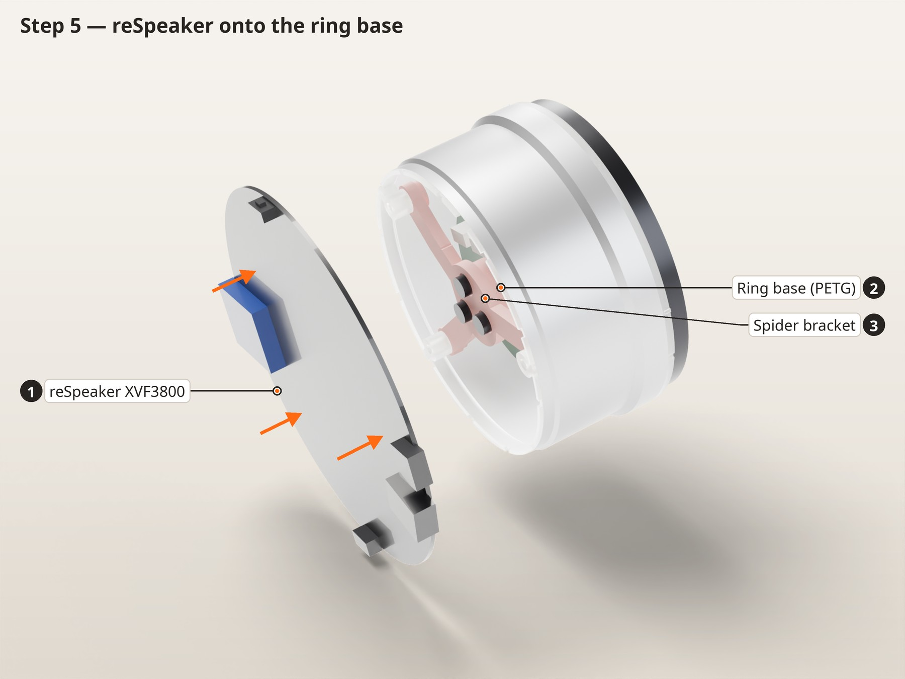
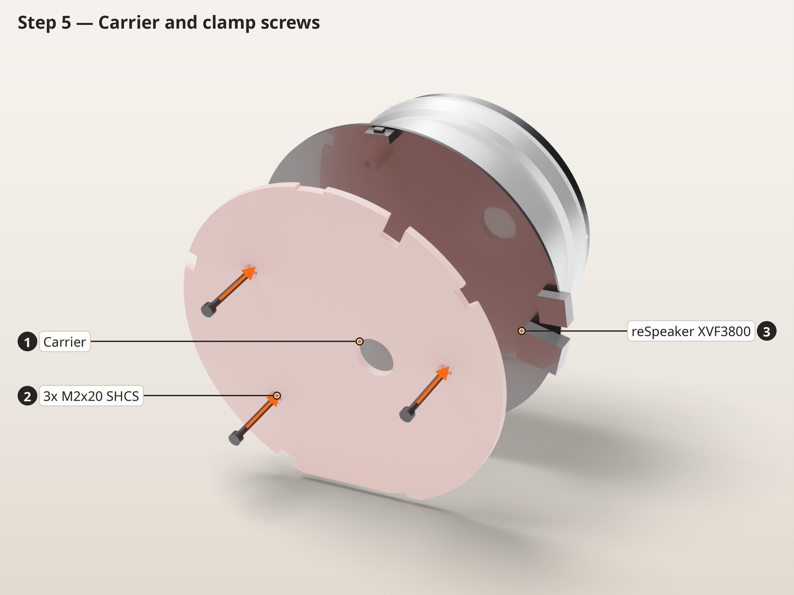
In this picture
- 1reSpeaker XVF3800
- 2Ring base (PETG)
- 3Spider bracket
In this picture
- 1Carrier
- 23x M2x20 SHCS
- 3reSpeaker XVF3800
- Lay the reSpeaker on the ring base's spacers, LED side toward the display, mute button (marked A) at 12 o'clock. The ring base's foot surrounds the LED ring; the CrowPanel lead runs across the board between two LEDs at 11 o'clock.
- Feed the speaker lead and the reSpeaker power lead through the carrier's centre hole. Set the carrier behind the board with its cable notch at 11 o'clock seen from the front.
- Fit 3 × M2 × 20 from the back of the carrier, through the board and the spacers, into the spider. Snug only: the screws pull the spider's inserts toward their mouths.
Check before moving onThe board doesn't rock and no wire is pinched.
Light ring, part 2 (ring shell)
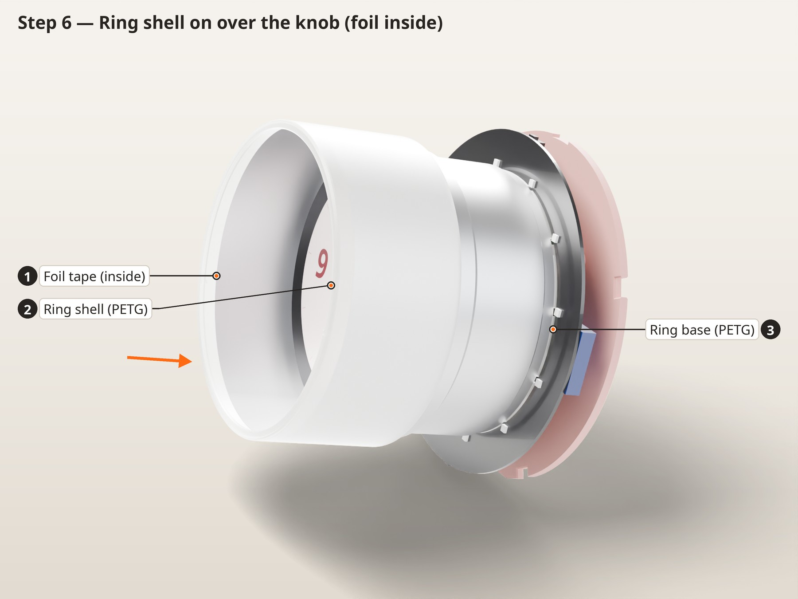
In this picture
- 1Foil tape (inside)
- 2Ring shell (PETG)
- 3Ring base (PETG)
- Line the inside of the ring shell's sleeve with foil tape, from the bottom edge up to about 4 mm below the cap, and cut it away over the sleeve's cable notch. The part of the sleeve that stands out of the case stays bare so it glows.
- Press the ring shell on over the knob, with its two tabs in the ring base's slots and its notch over the CrowPanel lead. The crush ribs hold it.
Check before moving onPower the boards on the bench and set the LED ring white. The whole ring should glow evenly, with no bright gap round the knob and no LED visible.
Ballast and grip pads
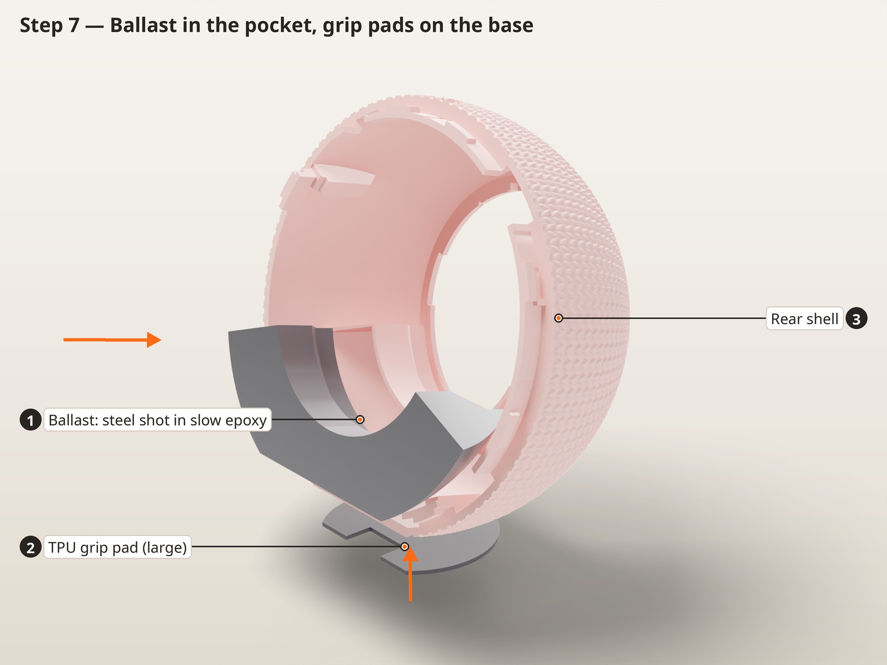
In this picture
- 1Ballast: steel shot in slow epoxy
- 2TPU grip pad (large)
- 3Rear shell
- Stand the rear shell on its back opening. Inside, along the bottom, a thin curved wall forms a pocket between itself and the shell, open at the top.
- Steel shot: mix a small batch of slow-cure epoxy (30 minutes or longer), stir in steel BBs, and spoon it into the pocket. Fill to about 1 mm below the pocket's rim, in two layers a few hours apart. A thick pour of fast epoxy gets hot enough to soften PLA (about 55 °C). Tungsten putty: press it in, then skim the top with a little epoxy so it can't move.
- Let it cure fully before the stack goes in: the carrier sits 2 mm above the rim.
- Glue the two TPU grip pads into the shallow recesses in the flat base (the large one on the rear shell, the small one on the front shell) with a few drops of CA.
Check before moving onNothing stands above the pocket's rim, and the pads sit flat in their recesses.
Into the rear shell
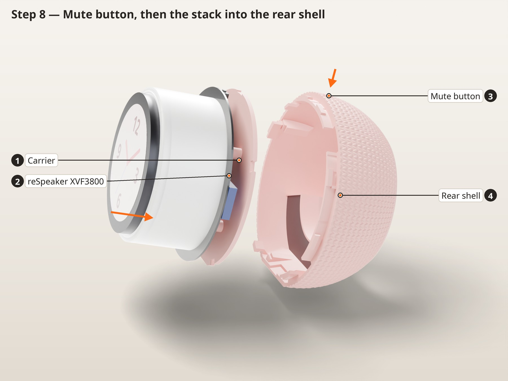
In this picture
- 1Carrier
- 2reSpeaker XVF3800
- 3Mute button
- 4Rear shell
- Push the mute button into the hole at the top of the rear shell from outside until its barb clicks.
- Stand the rear shell on its back opening and pass the speaker and power leads out through it.
- Before lowering, dress the CrowPanel lead straight down the board edge at 11 o'clock and through the carrier notch, and hold it there: the collar at the top of the rear shell has a gap for it only at that spot.
- Lower the stack in, display up, mute button (A) under the plunger. The carrier's 4 notches (with lead-in chamfers) slide down over the 4 ribs on the shell wall, and the board edge lands on the rib pads. It only goes in one way.
Check before moving onThe stack can't turn at all.
Front shell (twist lock)
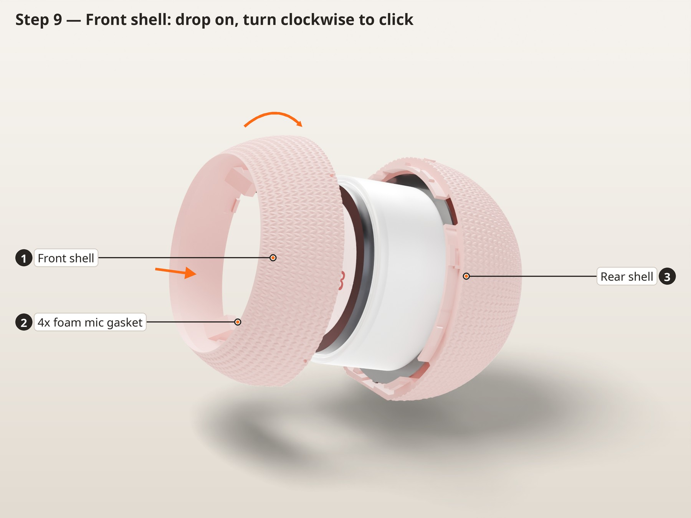
In this picture
- 1Front shell
- 24x foam mic gasket
- 3Rear shell
- Stick a foam gasket (Ø5 with a Ø2 hole) onto the underside of each of the 4 mic boots inside the front shell, hole over the channel. In v2 the gaskets ride on the shell, not on the board.
- Hold the front shell over the knob turned about 10° anticlockwise (seen from the front) from its final position. The base flats are then a finger's width apart. Lower it until the rims meet; it only drops fully in that one position.
- Turn it clockwise (seen from the front) about 10° until four small detent fingers click and it stops. The flat bases now line up.
- To open it: turn the front shell anticlockwise about 10° (firmly, past the clicks) until the flat bases are offset by a finger's width, and lift it off.
Check before moving onThe seam is closed all the way round, the flat bases line up, and the shells don't turn or pull apart by hand.
USB-C and speaker on the back plate (in this order)
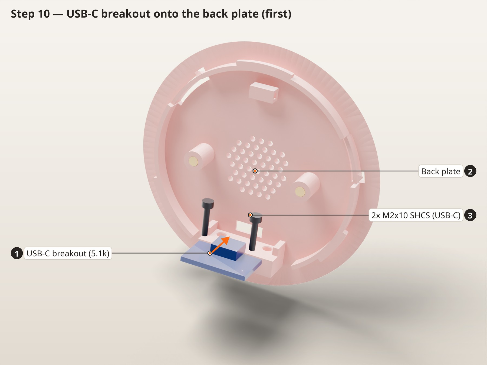
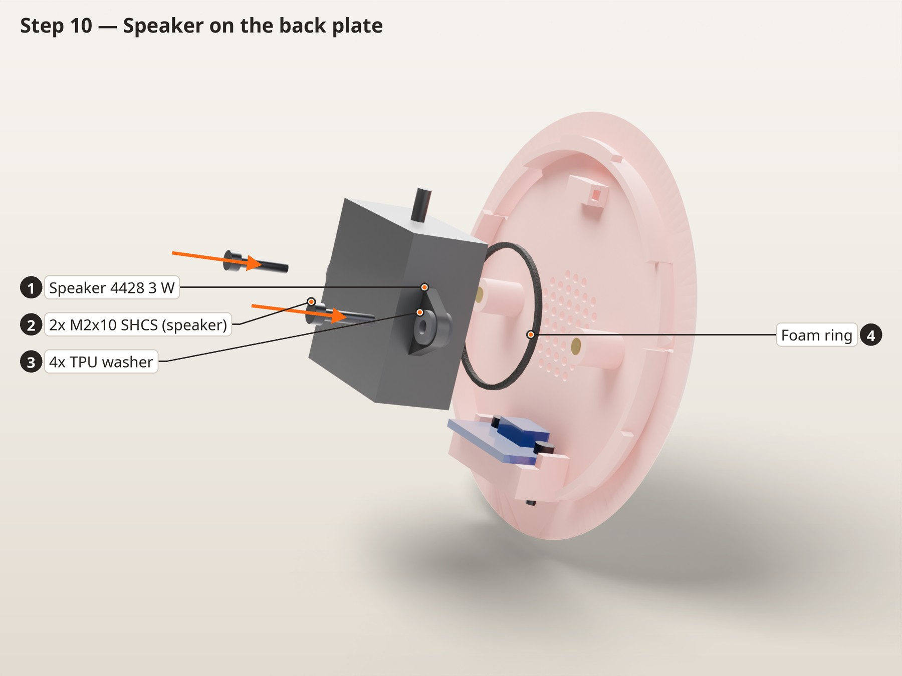
In this picture
- 1USB-C breakout (5.1k)
- 2Back plate
- 32x M2x10 SHCS (USB-C)
In this picture
- 1Speaker 4428 3 W
- 22x M2x10 SHCS (speaker)
- 34x TPU washer
- 4Foam ring
- Stand the USB-C breakout on its USB edge with the socket in the slot and its back against the wall. Fit 2 × M2 × 10 through its holes into the wall's inserts. Do this first: once the speaker is on, a hex key can't reach these screws.
- Stick a foam ring round the speaker's face. Washer, ear, washer on each boss, then 2 × M2 × 10, snug only.
- Zip-tie the speaker lead to the anchor.
- To remove the USB-C board later, take the speaker off first.
Check before moving onA USB-C cable plugs in fully from outside, and the speaker touches the plate only through the foam and washers.
Back plate (twist lock)
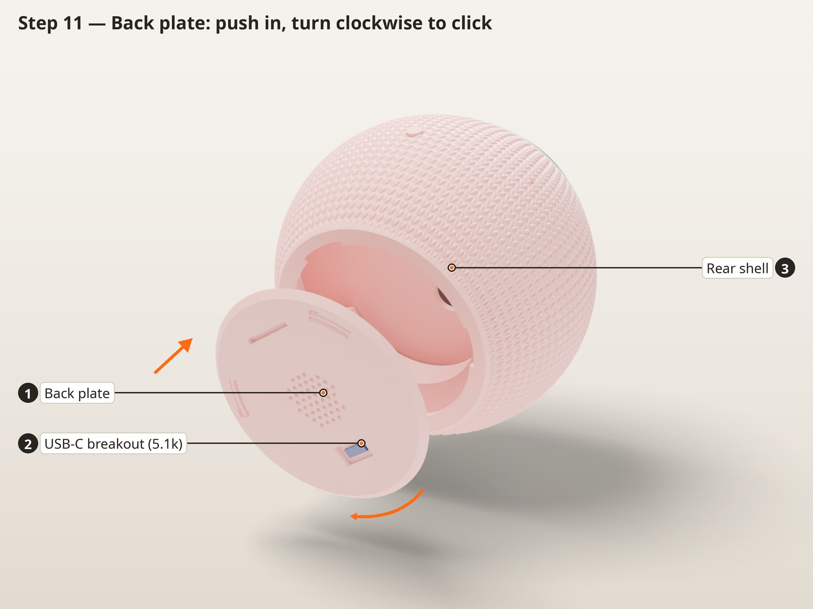
In this picture
- 1Back plate
- 2USB-C breakout (5.1k)
- 3Rear shell
- Plug the inlet's lead into the harness and tuck the wires clear of the speaker.
- Hold the plate so the USB-C socket is at about 5 o'clock seen from the back. The three lugs only drop through the lip in that position (the top lug is the wide one).
- Push it in and turn it clockwise (seen from the back) about one clock hour, until both pawls click and it stops with the USB-C at 6 o'clock.
- To open it: put a coin in the slot on the back and turn it anticlockwise, seen from the back, past the two pawl clicks.
Check before moving onPlug in a 5 V 3 A charger. The clock face comes up and the LED ring lights.
Finished
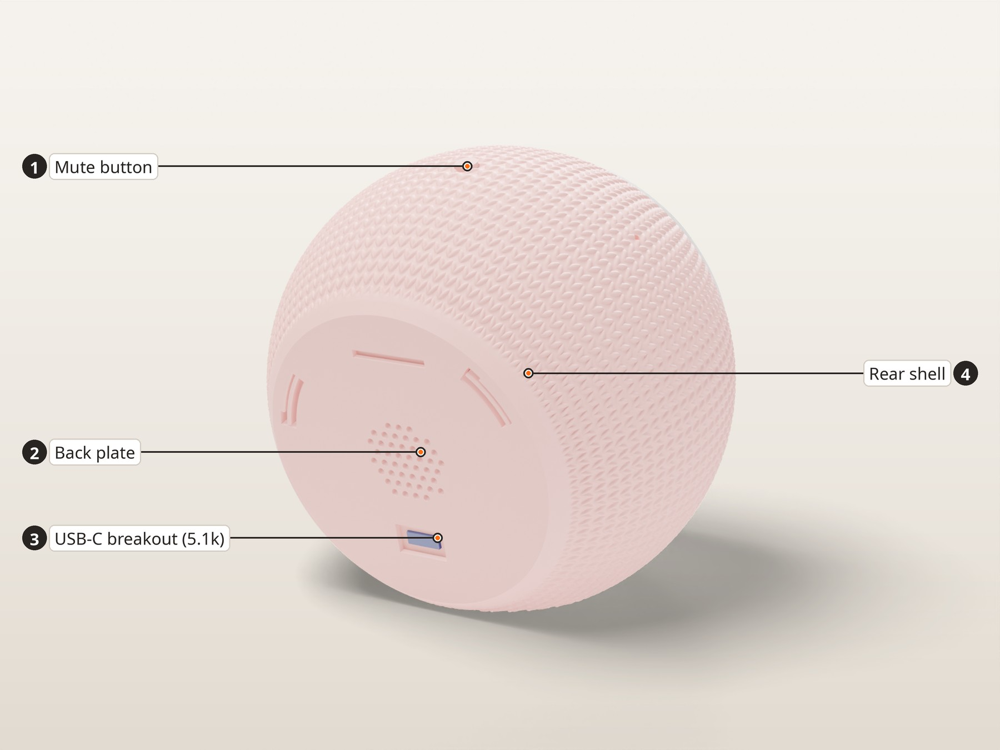
Flash the clock face with the ESPHome config in firmware/, and the reSpeaker with the formatBCE XVF3800 integration. Cap the speaker volume (the runaway follow-up loop seen on 6 Nov ran at 100 %). The v2 spider turns the CrowPanel 5° clockwise to cancel the tilt seen on v1; the firmware has no trim, so check the dial by eye. If 12 still sits X° anticlockwise, change CP_ROT_TRIM_DEG in cad/voice_clock.py by -X° and reprint the spider.